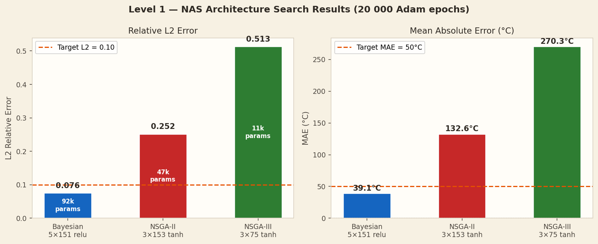

Results
NAS Results
Best Architectures Found
| Optimiser | Architecture | Activation | Params | L2 ↓ | MAE ↓ |
|---|---|---|---|---|---|
| Bayesian ★ | 5 × 151 | relu | 92 564 | 0.076 | 39.1°C |
| NSGA-II | 3 × 153 | tanh | 47 890 | 0.252 | 132.6°C |
| NSGA-III | 3 × 75 | tanh | 11 776 | 0.513 | 270.3°C |
| Accuracy Target | < 0.100 | < 50°C | |||
★ Only Bayesian meets the L2 < 0.10 target at 500 NAS trial epochs. NSGA-II and NSGA-III improve significantly with extended training (→ Level 5).
L2 Error Comparison
Architecture Search — Neurons vs L2

L2 and MAE bar chart for all three NAS optimisers (Level 1, 20 000 training epochs).
Cooling Curves — FEM Reference vs PINN Prediction

Centre-point temperature over 30 s. Analytical reference vs PINN predictions for all three architectures.